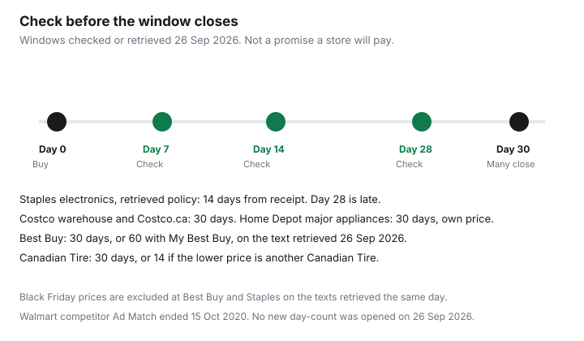

Household Items and Supplies · Canada
Price Adjustment Policies in Canada: How to Get Money Back When Something Goes on Sale After You Buy
You bought the vacuum. Two weeks later the same model is cheaper at the same store. Some Canadian retailers will return the difference inside a short window. Some will not, and several will not do it for a competitor’s Black Friday tag. This guide is the after-purchase half of the problem. Matching a price before you pay is the 2026 price-match guide. Grocery flyers are a different set of rules. Nothing here is a promise that a clerk will say yes.
Key takeaways
- Adjustment is money back after you bought. A match is a lower price applied at the purchase, often from a competitor. Read which one the page actually offers.
- Costco’s warehouse answer, published date 09/10/2025, is 30 days at the membership counter. Costco.ca uses a form and does not match other retailers or the warehouse.
- Best Buy’s retrieved policy is 30 days, or 60 for a My Best Buy account, and it excludes Black Friday, Cyber Monday, and Boxing Day prices.
- Home Depot’s 30-day appliance adjustment is Home Depot’s own price, not a competitor’s. Canadian Tire’s retrieved guarantee is 30 days, or 14 against another Canadian Tire.
- Put checks on days 7, 14, and 28. The window is the retailer’s, not a mood.
Price adjustment vs price match: the difference that matters
A price match answers a question you ask before the money moves: will you sell me this identical, in-stock item for the lower price that other seller is advertising? A price adjustment answers a question you ask after: your own price fell, or a price your policy still counts fell, so return the difference on the receipt I already have. Household shoppers lose the difference when they use the wrong word. “You price match” at a return desk, two weeks later, is often a no, because the match was a checkout rule and the adjustment is a shorter, stricter rule.
Costco’s pages use “price adjustment” and then say they do not match other retailers. Best Buy’s Low Price Guarantee uses “match” for a competitor and for its own later price cut, inside one policy. Home Depot matches a competitor at purchase and, for listed major appliances, adjusts its own price for 30 days. The table uses each retailer’s own scope. If your receipt is from a marketplace seller, assume you are outside these programs until the policy says otherwise.
Canadian retailer window table (verify at draft)
Every row was checked on 26 September 2026 against the page named in the sources. Best Buy, Canadian Tire’s marks.com guarantee, and Staples did not return a clean direct page that day (access block or a bot check). Their rows use the official text retrieved the same day, and you should re-open the live page before a large claim. Walmart’s competitor program end-date is from 2020 reporting. The live Walmart.ca pricing article did not load through a bot check on 26 September 2026, so this table does not invent a current Walmart day count.
| Retailer | Window | Proof | Exclusions that matter here | Where to claim |
|---|---|---|---|---|
| Costco warehouse | 30 days from purchase | The purchase; item still in stock, not a demo; promotion still valid | Other retailers; Costco.ca prices; demo merchandise | Membership counter at the warehouse |
| Costco.ca | Purchase within 30 days before the Costco.ca price change | The online order; the form | Warehouse prices; other retailers; gold and silver bars; gift cards; live-event tickets | Costco.ca price-adjustment form. Credit typically 5–7 business days after the order ships |
| Best Buy | 30 days; 60 days with a My Best Buy account | Original receipt; competitor identified so Best Buy can verify stock | Black Friday, Cyber Monday, Boxing Day prices; marketplace; clearance; coupons; rebates | The low-price guarantee, in store or as the policy describes for the channel you used |
| Canadian Tire | 30 days with receipt; 14 days if the lower price is another Canadian Tire | Receipt and the competing ad. Local competitor: store within 200 km, or a Canadian “.ca” site | Stores beyond 200 km. canadiantire.ca also says dealers need not match an online price before the regional sale starts | A Canadian Tire store, on the marks.com guarantee text retrieved 26 Sep 2026 |
| Home Depot | Major appliances: 30 days, Home Depot’s own price only | Receipt and proof the Home Depot price is now lower | A competitor’s later price does not qualify for this 30-day adjustment. Clearance, open-box, marketplace, rebates | Service desk in store, or live chat or phone for an online order |
| Walmart | No competitor after-purchase window verified on 26 Sep 2026 | Not stated in a page this draft could open | Competitor Ad Match ended 15 Oct 2020 (Daily Hive, 19 Sep 2020) | Do not plan a competitor refund. See the grocery guide for what that end-date changed |
| Staples | 30 days of receiving the item; 14 days for electronics | Authorized Canadian reseller; Amazon only if Ships from and Sold by Amazon.ca | Marketplace sellers; clearance; Black Friday, Cyber Monday, Boxing Day, Boxing Week, Prime Days | Staples help-centre policy retrieved 26 Sep 2026. Confirm the live article |
How to track prices after purchase: alerts, Flipp, and price-history tools
The tracking system is a date and a model number, not a new app. On the day you buy, put the model, the price, the retailer, and the window end-date into a calendar you already use. Check on day 7, day 14, and day 28, which is inside a 30-day window and before a 14-day electronics window has already closed. If the policy is 14 days, day 28 is too late. The chart uses 30 days as the common case and marks the shorter Staples electronics close on purpose.
Flipp is a flyer drawer. It shows you an ad. It does not force a refund. How to use it without confusing grocery rules with a vacuum is the Flipp app guide and the price-match system. A price-history site can show you an earlier tag. This draft does not rank those sites and does not treat a third-party chart as the retailer’s proof. The proof is whatever that retailer’s page lists: a receipt, a live page, a flyer, or a form. A recurring membership you added “to track prices” belongs on the hidden-charge list if you cannot say what it does.

Costco Canada process: warehouse Membership counter vs Costco.ca form
Costco splits the path by where you paid. The warehouse answer, title “What is the price adjustment policy for warehouse items?”, shows a published date of 09/10/2025. It says Costco will honour an adjustment for an in-warehouse purchase within 30 days. The item must be in stock, demonstration merchandise excluded, and the request must fall inside the promotion’s dates. You go to the membership counter of your local warehouse. If the purchase was online, that answer points you to the Costco.ca page instead.
The Costco.ca answer, also showing published date 09/10/2025, says Costco.ca will credit the difference between what you paid and the current lower Costco.ca price if the online purchase was placed within 30 days before the price change. You use the form on that page. It says Costco.ca does not price-match the warehouse, and the warehouse does not match Costco.ca, and neither matches other retailers. The credit is processed once the order has shipped, typically within 5 to 7 business days, back to the original payment. Gold and silver bars and bullion, gift cards, and live-event tickets are called out as ineligible. Offers cannot be combined. Costco says it may restrict the policy later, with restrictions shown at purchase. The membership fee itself is a separate question on the Costco membership guide.
What doesn't qualify: clearance, instant-rebate differences, marketplace items
Clearance is the exclusion that surprises people who “found it cheaper in the back.” Home Depot’s page, read 26 September 2026, says the guarantee does not apply to clearance, liquidations, close-outs, open-box, display, or damaged goods, or to marketplace and auction sellers such as Amazon Marketplace. Rebates, gift-with-purchase, bundles, and financing offers are also out. An instant rebate that made a competitor look cheaper is not a base price Home Depot has agreed to match. Best Buy’s retrieved online policies exclude marketplace sales, clearance, close-outs, liquidations, rebates, coupons, and purchases made with reward points. Staples’ retrieved text excludes marketplace sellers, refurbished and open-box goods, and clearance, including clearance at another Staples store.
A Black Friday tag is its own exclusion where the policy names it. Best Buy’s retrieved online policies exclude Black Friday, Cyber Monday, and Boxing Day prices. Staples’ retrieved text excludes Boxing Day, Boxing Week, Black Friday, Cyber Monday, Cyber Week, and Amazon Prime Days. Home Depot’s appliance adjustment does not mention Black Friday. It does say the 30-day promise is Home Depot’s price, not a competitor’s, and that ordinary price matches are at the time of purchase except for that appliance window. If your November fridge was bought at Home Depot and Home Depot’s own price on that model drops within 30 days, that is the adjustment the page describes, still subject to the exclusion list. A competitor’s Black Friday tag is not that adjustment.
A 30-day post-purchase calendar reminder routine
Day 0: file the receipt, the model, the serial if it is an appliance, and the policy end-date. Day 7: open the same retailer’s page for that model and note the price. Day 14: do it again. This is the last useful check if your window is 14 days, which is the Staples electronics figure in the retrieved help text and the Canadian Tire figure when the comparison is another Canadian Tire store. Day 28: last check inside a 30-day window, while you still have time to reach the desk. My Best Buy’s 60 days, if your account qualifies on the retrieved page, gets one more check in the fifth week. Do not wait for the morning the window ends.
If the price is lower and the exclusion list does not name your situation, ask once, with the receipt and the proof, under the words the policy uses. If the answer is no, the next move is a different store next time, not a second speech. The sale-calendar guide is where you decide the purchase date. This page is only the 30 days after that date.
Sources & date stamps
- Costco customer service, warehouse price adjustment, published date shown as 09/10/2025, read 26 Sep 2026: 30 days, membership counter, in stock excluding demos, promotion dates still valid.
- Costco.ca price adjustment, published date shown as 09/10/2025, read 26 Sep 2026: online purchases within 30 days before a Costco.ca drop; form; no warehouse or competitor match; credit typically 5–7 business days after ship.
- Best Buy Canada Low Price Guarantee and Online Policies, text retrieved 26 Sep 2026: 30 days, 60 for My Best Buy; Black Friday, Cyber Monday, and Boxing Day excluded; marketplace and clearance excluded. Direct fetch blocked the same day.
- Canadian Tire price-match guarantee on marks.com, text retrieved 26 Sep 2026: 30 days, or 14 days versus another Canadian Tire; 200 km; “.ca” sites. Direct request returned 403. canadiantire.ca pricing policy, read 26 Sep 2026: dealers need not match online prices before the regional sale.
- Home Depot Canada price guarantee, read 26 Sep 2026: 30-day major-appliance adjustment on Home Depot’s own price; competitor match at purchase only; exclusions include clearance, marketplace, rebates.
- Staples Canada help centre, “Price match information and policies,” text retrieved 26 Sep 2026: 30 days from receipt, 14 days for electronics; event and marketplace exclusions. Direct page showed a bot check.
- Daily Hive, Megan Devlin, 19 Sep 2020: Walmart Canada Ad Match ending 15 Oct, with a remaining match to Walmart’s own site. Access Winnipeg, 18 Sep 2020: Ad Match discontinued 15 Oct 2020.
Frequently asked questions
What is the difference between a price adjustment and a price match?
A price match applies someone else's lower price, usually at the moment you buy. A price adjustment returns the difference after you have already paid, usually because the same retailer cut its own price. Some Canadian policies use one phrase for both. Read the window and the exclusions on that retailer's page before you assume they are the same offer.
Can I get a Costco price adjustment without going to the warehouse?
Only if you bought on Costco.ca. The Costco.ca answer, published date shown as 09/10/2025, says to use the online form for a Costco.ca price drop within 30 days, and to go to the membership counter if you bought in the warehouse. Costco.ca does not match warehouse prices or other retailers.
Do clearance or instant-rebate prices qualify?
Often they do not. Home Depot's page, read 26 Sep 2026, excludes clearance, open-box, and rebates from the price guarantee. Best Buy's online policies, text retrieved the same day, exclude clearance, rebates, and coupons, and Staples' help text excludes clearance and close-outs. Read the row for the store you used.
Does a Black Friday price count for a purchase made in November?
Not at every store. Best Buy's retrieved online policies exclude Black Friday, Cyber Monday, and Boxing Day prices from the low-price guarantee, and Staples' retrieved help text excludes those event prices too. Home Depot's major-appliance adjustment is its own price within 30 days, and that page does not use the words Black Friday. Check the retailer, not the calendar.
What do I need to bring to claim?
The original receipt or order number, the model, and proof of the lower price the policy actually accepts. Costco's warehouse answer says the item must still be in stock, excluding demonstration merchandise, and inside the promotion dates. A screenshot that hides the seller or the date is a weak proof.